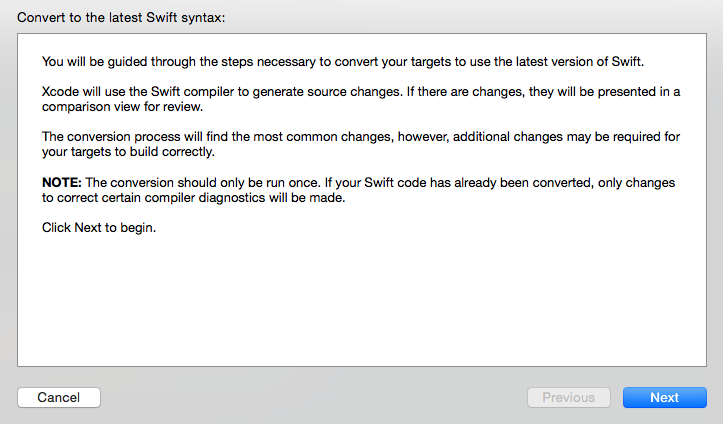

- Mon 12 October 2015
- development
- mani3
- #ios
Update Project
Xcode 7.0.1にインストール後にプロジェクトファイルを開く
Edit -> Convert -> To Latest Swift Syntax

プロジェクトファイル( project.pbxproj )を含めて，自動でコンバートされる．
Build errors
コンバートした後にビルドするといくつかエラーになった．．
その①
'stringByAppendingPathComponent' is unavailable: Use URLByAppendingPathComponent on NSURL instead.
Stringクラスから stringByAppendingPathComponent メソッドが使えなくなってしまったので NSURL か NSString を使う． ただ，修正箇所が多かったので以下のように対応した．
extension String {
func stringByAppendingPathComponent(path: String) -> String {
let nsString = self as NSString
return nsString.stringByAppendingPathComponent(path)
}
}
その②
Cannot invoke initializer for type 'sqlite3_destructor_type' with an argument list of type '(COpaquePointer)'
対応方法が stackoverflow にあったのでそのまま利用させてもらった．
// Swift 1.2
- let SQLITE_STATIC = sqlite3_destructor_type(COpaquePointer(bitPattern: 0))
- let SQLITE_TRANSIENT = sqlite3_destructor_type(COpaquePointer(bitPattern: -1))
// Swift 2.0
+ let SQLITE_STATIC = unsafeBitCast(0, sqlite3_destructor_type.self)
+ let SQLITE_TRANSIENT = unsafeBitCast(-1, sqlite3_destructor_type.self)
その③
Cannot invoke initializer for type 'NSDictionary' with an argument list of type '(objectsAndKeys: NSData, CFString, NSDate, CFString)'
NSDictionary(objectsAndKeys: [AnyObject]) のイニシャライザが使えなくなってしまったので，NSDictionary(objects: [], forKeys []) に書き直す．
// Swift 1.2
var query: NSMutableDictionary = NSMutableDictionary(objectsAndKeys:
kSecClassGenericPassword, kSecClass,
identifier, kSecAttrGeneric,
service, kSecAttrService
)
// Swift 2.0
let query: NSMutableDictionary = NSMutableDictionary(objects:
[
kSecClassGenericPassword,
identifier,
service
], forKeys:
[
kSecClass as NSString,
kSecAttrGeneric as NSString,
kSecAttrService as NSString
]
)
その④
Nil is not compatible with expected argument type 'NSStringCompareOptions'
NSStringCompareOptions に nil を指定できなくなったいたので空の配列を指定するようにする．
// Swift 1.2
let text = NSString(string: originText).stringByReplacingOccurrencesOfString(" ", withString: "", options: nil, range: nil) as String
// Swift 2.0
let text = NSString(string: originText).stringByReplacingOccurrencesOfString(" ", withString: "", options: [], range: nil) as String
Swift Library
Module file was created by an older version of the compiler; rebuild 'xxx' and try again: project/Frameworks/xxx.framework/Modules/xxx.swiftmodule/arm64.swiftmodule
Swift 1.2 でビルドしているモジュール ( .framwrok ) は，Swift 2.0でビルドし直す必要があった． モジュールも修正してSwift 2.0でビルドし直したらビルドが通りました．
iTunes Connect
Swift 2.0関係ないかもしれないけど，iTunes Connect にアップロードするときにエラー起きたのでメモ
Error Domain=ITunesConnectionOperationErrorDomain Code=1091 \"This bundle is invalid. The Info.plist contains an invalid key 'CFBundleResourceSpecification' in bundle xxx [xxx.app]\"
今まで CODE_SIGN_RESOURCE_RULES_PATH に「 $(SDKROOT)/ResourceRules.plist 」を設定しているのが原因だったので削除する．